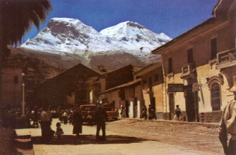

|
|||||||||||||||||||||||||||
|
|||||||||||||||||||||||||||
|
ドイツの学術書に載った43年前のワスカランの写真 |
| 実 施 日 | １９６５年（登山） ２００８年（出版物に掲載） |
|||
| 報 告 者 | 早川 滉 | |||
| HP制作者 | 西田 進 | |||
| 1965年、私は憧れていた海外登山をした。 この時の私が撮影した写真が、43年後にドイツで出版された地震学の学術書（東京大学大学院 東畑郁生教授著）に掲載された。 この写真が思いがけず「後世に役立つ写真」となった。 |
| １ | 初めての海外遠征−1965年ペルー・アンデス− |
| A | 所属する早稲田大学岳友会の創立10周年記念の遠征登山に参加した。この年に実質的に海外渡航が自由化になった。それまでの文部省の海外派遣で外貨枠を使う許可を得なければならぬのは至難の技であったので、この年には前年の約３倍の301人の若者が海外に飛び出した。 アンデスの白嶺と言われたコルディエラ・ブランカ、各国の挑戦を退けていて当時アンデスの課題と言われた難峰オクシャパルカ峰（5881m）の初登頂に我々は成功した。 この初登頂は1961年一橋大ペルー・アンデス隊の隊長であった吉沢一郎氏にいたくほめられた。氏は世界の登山、探検文献資料の高名な研究家で、のちにJAC副会長もされた方で、岳界の辛口ご意見番でもあった。 |
|
| 船旅 太平洋を横断して、ペルーまで約１か月、往復船旅だけで２か月を要した。（前から２番目が私） |
|
オクシャパルカ峰初登頂の瞬間（1965年7月10日12時40分 黒点が頂上と右稜線にみえる） |
| A | ||
| 対岸のウルス東峰（5420m）に登り、第9登のランラパルカ峰（6162m）と初登頂のオクシャパルカ峰（5881m）を望む |
ランラパルカC１に降り、祝杯をあげる(ペルーにはまだガイド、シェルパはいなくて、道案内を兼ねてポーターを1人雇った) |
| ２ | 山渓カラーガイド 『カラー・世界の山々』 1967年刊 |
| A |
1965年から海外渡航が自由化され爆発的に海外遠征登山がなされ、その成果が『カラー・世界の山々』となった。日本人の写真だけで世界の山々を紹介し、これほどまでに多くの山々を盛り込んだ本は初めてだった。登山史上、象徴的な本だった。 |
|
| 『世界の山々』 表紙 A5版より小さいサイズであるが、ヒマラヤ、カラコルム、アルプス、アフリカ、アラスカ、アンデスはもちろん、グリーンランド、南極の山までと、文字どおり世界の山々が盛り込まれている。 |
| A |  | |
|
オクシャパルカ |
ワスカラン オクシャパルカ登山の後、ペルー・アンデス最高峰ワスカラン（6768m）見物にふもとの町ユンガイに行った。標高差4500mの光景は迫力があった。この写真が43年後にドイツの出版物に扱われた。その本の著者東畑教授の奥さまが小学生の時に求めたこの本が少女時代の愛読書だったとは驚いた。この本の中に教授は1970年のペルー大地震前の写真を見つけられたのだった。 |
 |
|
ASC会員原謙一氏撮影のアルバータ峰も掲載されている |
| ３ | 『Geotechnical Earthquake Engineering』（地盤耐震工学） 東畑郁生著 ドイツシュプリンガー出版社 2008年刊 |
 |
A |
東京大学大学院工学系研究科社会基盤学専攻東畑郁生教授から送られてきた本は、大判（A4）で、687ページもある分厚いとても重い英語本だった。 |
|
|
| ４ | エピローグ 1970年ペルー大地震の惨状 |
|
当時、我々の遠征隊の一番若い宮下昭隊員は現地留学のためリマに在留しており、チリー山岳救助隊の大型ヘリで現地入りし、その惨状を伝えている。 |
| A | ||
|
この宮下レポートに写真（現地コレオ新聞よりの転載）が添付されていた。 この残った4本の椰子の樹はプラサ・デ・アルマス（公園広場）のもので、それは私のカラー写真と全く同じアングルで撮ったモノクロ写真の椰子の樹が左に写っている。これが同じ樹だとは信じがたい。ユンガイの街並みはすっかり消えていた。この地震がいかにひどいものであったかが良く判る。 |
||
|
東畑教授の本はこの地震の実態をよくまとめてあり、よく理解できた。実は2000年のワスカラン登頂の帰りに仲間の隊員が下痢、嘔吐の連続でついに国家警察山岳救助隊のヘリの出動となった。私はその付添い役で、ヘリを待ったのはBCから40分ほど下った尾根上の平地でそれは西壁を仰ぎ見るところ（写真では南峰の真下あたり、雪線は後退している）、つまり1970年の大災害の起点になった氷河の下だった。 |